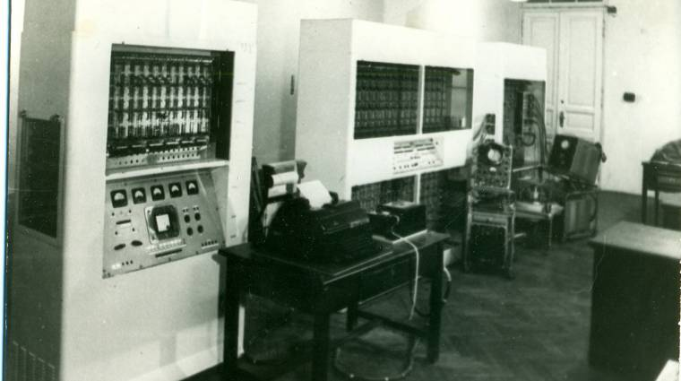

A Magyar Informatka Világnapja
Az M–3 első generációs számítógép. Az MTA Kibernetikai Kutatócsoportja által, szovjet tervdokumentáció alapján, az első Magyarországon épített elektronikus számítógép.
Története
Az M–3 terveit a Szovjetunió Tudományos Akadémiájának Energetikai Kutatóintézetében dolgozták ki, 1956-58 között. A cél egy, az abban az időben a működő katonai célokra szolgáló nagy számítógépeknél – BESZM, Sztrela –, olcsóbb és kisebb, polgári felhasználásra alkalmas számítógép létrehozása volt. Innen származik az elnevezése is, a hivatalos orosz elnevezés első szavának kezdőbetűje, (Малая электронная счётная машина[1] — kis[méretű] elektronikus számológép).
A Moszkvában elkészített tervek alapján több helyen épültek M–3-as számítógépek: az örményországi Jerevánban ez a gép volt a Razdan sorozat alaptípusa, a fehéroroszországi Minszkben ezeknek a terveknek az alapján készültek a Minszk sorozat első gépei, Kínában 1957-ben szintén ezeknek a terveknek segítségével épült az első kínai számítógép. És ezeknek a terveknek az alapján (ma úgy mondanánk ezen licencnek az alapján) épült Magyarországon 4 darab M–3.
Magyarországon 1956-ban hozták létre Varga Sándor vezetésével az MTA Kibernetikai Kutatócsoportját. A forradalom miatt a kutatócsoport valójában 1957 februárjában kezdte meg működését, de még ennek az évnek augusztusában hozzákezdett a Szovjetunióból kapott tervdokumentáció alapján az első magyar gyártású számítógép építéséhez. A számítógép kizárólag magyar gyártmányú, a Tungsram által gyártott világszínvonalú szubminiatűr elektroncsövekből épült. Egyedi magyar fejlesztés volt a memóriát helyettesítő mágnesdob is.
Felépítése
Az M–3 kétcímes gép volt 31 bites szavakkal (ebből az első bit az előjel bit). A magyar változat operatív memóriája, magyar fejlesztésű 1024 szó tárolására képes, mágnesdob. Műveletei sebessége a mágnesdob lassúsága miatt 30 művelet/sec. A mágnesdobot később, a technikai fejlődésnek megfelelően, ferritgyűrűs memóriára cserélték. Ezzel a kapacitása ~80 000 szóra, sebessége 1500 művelet/sec-ra nőtt. A bemeneti periféria kezdetben 5 csatornás mechanikus (telex) lyukszalag, de ezt idővel 8 csatornás (teletype) szalag váltotta fel. Kimeneti periféria egy teletype írógép volt.
A gép összességében 770 elektroncsőből, és 2000 diódából állt, nagy meleget termelt, sok probléma volt a hűtésével. Fogyasztása 10 KW és nagyjából 3 m² alapterületet igényelt.
A gép maga 3 önálló szekrényből állt. A központi szekrényben helyezkedett el az aritmetikai egység, vezérlő egység és a vezérlő pult. Külön szekrényben volt az operatív tár szerepét játszó mágnesdob és a többi periféria vezérlője. Egy harmadik szekrény tartalmazta a tápegységeket. Általában ezen kívül a gépterem felszerelése volt még egy asztal a lyukszalagolvasó és a teletype részére, de ezeket a perifériákat a géptermen kívül is el lehetett helyezni; hagyományos telekommunikációs kapcsolattal akár a „távmunka” is biztosítható volt.
Alkotók:
- Varga Sándor
- Márkus Emília
- Szelezsán János
- Veidinger László
- Krekó Béla
- Ganzer Sándor
- Jándy Géza
Vezető:
Matematikai osztály:
Közgazdasági osztály: